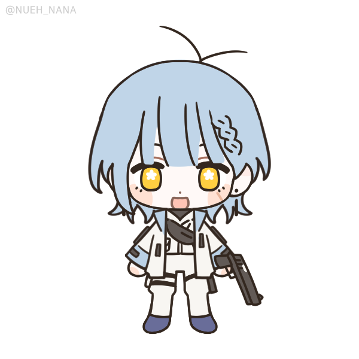
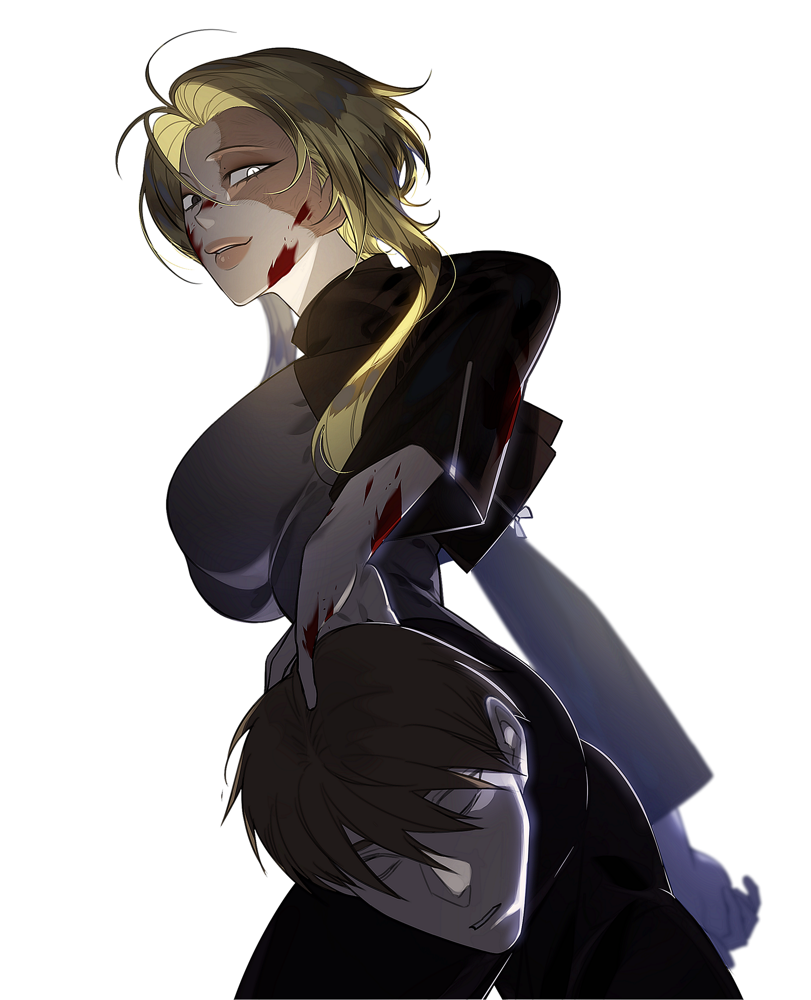

Kingwangjjang Muneobal 상해가능정도 및 트리거 요소
상해가능정도 및 트리거 요소
캐치프레이즈
"자기야, 정신 안 차려?"
외관
출처 ∣
머리부터 발끝까지 신경 쓴 티가 여실히 나는 모양새.
고가의 신발, 트위드 재킷 세트, 가방 등 패션에 관심이 많다면 충분히 알아볼 만한 옷차림은 머리부터 발끝까지 유명 고가 브랜드의 의류로 입었다. 손끝까지 빼먹지 않고 올리브색 네일을 발랐다. 역시나 골반을 덮는 길이의 긴 머리카락에도 갈라짐 없이 윤기나는 분홍 머리칼은 어떠한가. 자연스럽게 넘긴 앞머리는 숨김없이 얼굴을 훤히 드러낸다. 약간의 산이 있는 눈썹, 짙은 쌍꺼풀 라인과 풍성하게 뻗은 속눈썹. 그 안에 선명한 파란 눈동자. 살짝 쳐졌나 싶은 눈매에도 성격 탓인지 유순해 보이기보단 만만해 보이지 않는 분위기를 풍긴다. 언제나 보이는 상대를 깔보는 듯한 눈빛, 미소가 한몫할 것이다. 그리고 그의 귀에 달린 고가의 주얼리와 채도 높은 분홍색의 립을 마지막으로 그를 설명할 수 있겠다. 그러니까, 쉽게 시선을 끌 정도로 화려하고 사치스러워 보인다고 말이다. 본인을 꾸밈에서 주저함이 없으니 틀린 말은 아니다.
성격
[ KEYWORD 1 ∣ KEYWORD 2 ∣ KEYWORD 3 ]
객관적으로 쓰레기, 주관적으로도 쓰레기.
박하다 칭할 수 있으나 그의 평소 행실을 듣다 보면 이러한 평가가 내려지는 것은 그리 어려운 일이 아니다. 예의는 어디에 두고 왔는지 타인을 깔보는 태도가 깔렸고 이를 따로 숨길 생각이 없다. 부정적인 평가가 내려져도 대체로는 인정하는 편이기도 하고 그런 것에 일일이 신경 쓰지 않는다나. 그 모습에서 본인 스스로 자존감이 높다는 점은 좋으나 주변인으로서는 가까이하고 싶지 않은 부류이다.
그러면서 애인을 쉼 없이 갈아치우는 모습을 보면 그나마 반반한 얼굴, 화술 등의 매력이 존재하는 편이란다. 그러므로 이러한 단점도 당당한 면이라고 포장될 수 있는 듯. 본인 말로는 남을 내려보는 태도에서 나오는 장점은 타인을 수직적으로 파악할 수 있음이 용이하다고. 어디까지나 본인 주관이며 관점이나 다른 말로 해석하자면 대충 본인이 눈치가 빠르다는 소리 같다. 문제가 있다면 타인의 눈치를 보지 않을 뿐이지, 일시적이라고 하나 제 주변인이라고 불릴 수 있는 존재라면 그들의 변화에도 민감히 반응하고 알아채는 것에 능하다. 뭐… 일종의 습관 같은 거라던데? 타인의 기분을 생각하지 않은 안하무인이란 주된 평가가 있으나 일회성 관계라도 맺을 수 있는 것은 이 점 덕분일 것이다. 인간과의 좋은 커뮤니케이션에 사용하는 것이 아닌 이득을 취하는 용도 외에는 쓰지 않아서 문제이지만. 주변인과 애인 등의 사람은 물론이고 물건조차 매일 같이 갈아 치운다. 기준도 각양각색. 물으면 답을 해주나 큰 진심이 담긴 모양새는 아니다. 너, 어제 신고 나온 구두가 너무 구려서 정떨어졌어. 라던지… 똑같은 가방을 든 사람을 봐서 기분이 나빠져서 버렸어. 라던지. 뭐가 되었든 이해하기 쉬운 기준은 아니다. 쉽게 버리는 만큼 고르거나 결정하는 것에 있어서도 굉장히 빠르고, 쉬운 모습을 보여준다. 결정에서 생각보다 일순간의 감정을 따르는 편. 타인의 시선을 신경 쓰는 부류의 인간이 아니다 보니 더 집단 안에 있으면 도드라지는 특징이다. 행동거지가 그렇게나 가벼운 주제에 한 번 마음먹은 것은 제 손에 넣어야 직성이 풀린다. 아마 이런 성정 덕에 제대로 된 직업도 없으면서 지금까지 사회의 속할 수 있던 것 아닐까? 그러나 이 또한 일반적이지 않다. 본인 노력으로 손을 넣는 건 딱 인간관계를 주무르는 정도이지, 피땀 흘려 번 돈으로 원하는 물건을 산 적은 없다. 아니, 없다고 하면 너무 인생을 헛산 것 같으니 손에 꼽는다고 정정한다. 그를 곁에 두고 싶지 않아도 자주 마주치는 사이라면ㅡ그는 이들을 친구라고 멋대로 칭한다.ㅡ 충분히 알 법한데, 화려하게도 제 관심사를 뽐내고 다녔다. 수집에 관련된 것이라면 모르려야 모를 수 없게도 한바탕 뒤집어 놓고 다니는지라, 전에 한 번 구두, 그중에서도 스틸레토 힐에 빠졌을 때는 매일 같이 쇼핑에, 각양각색으로 바뀌는 구두에 기함했다고. 트렁크에도 집에도 온통 힐, 그리고 힐! 한 달 정도가 지났을까, 아직도 사모으느냐는 지나가는 질문에 제가 그랬냐는 듯 시큰둥한 반응을 보이며 무관심하게 핸드폰을 만지긴 했지만 말이다. 그러한 행동들을 보고 있자면 한마디로… 애 같다는 표현이 절로 떠오른다. 그러나 다른 점이라면 속물적이고 손익계산에 능하다. 그리고 그것을 숨기려 함도 전혀 없다. 전혀 부끄러워하지도 않는 기색. 기본적인 염치나 예의가 결여됐다. 그의 몇 남지 않은 지인은 그를 반만 커버린 인간이라며 폄하하기도 한다. 노력하면 챙길 수 있지만, 필요성을 느끼진 않는 듯. 절제라고는 없는 행동에 혀를 내두를만하지만 어쩌겠나, 그럴 사람은 이미 그의 주변에서 다 떠나고 없다! 그에게 있어서 사람은 두 가지 부류로 나뉜다. 앞으로 제게 이득을 가져다줄 사람과 그렇지 않은 사람. 참으로 무식하고도 단순한 방법이다. 그게 계속해서 통할지는 의문이다만.
능력 평가도
이능력 등록
이능력 활용 기입서
기타
생년월일:
1988. 02. 10
혈액형: O형 거주지 : 서울특별시 강남 주변에서의 평가 : 눈에 띄고 싶어 안달난 사람은 아니나 시선을 잡아끄는 인간이라 평할 수 있다. 사회가 정한 카테고리 안에 속하지 않는 사람은 도드라질 뿐이다. 그 시선을 신경쓰지 않고 행하니 얼마나 더 눈길을 받을 수 밖에. 어쩌면 눈총일 수도 있다. 칭하는 호칭들은 그 나이 먹고도 정신 못차린 트러블 메이커, 안하무인 등. 가족관계 : 부모님 두 분과 동생 한 명. 호적에 기록된 가족 사항이나 현재는 아무도 모른다. 본인조차 크게 찾으려는 노력이 없는 걸 보니 별 생각이 없는 듯. 직업 : 무직. 일? 1차 바이러스 사태 이후로 몸이 상했다며 일절 하려 들지 않는다. 그러면 지금은 어떻게 생활하냐, 애인들의 도움으로 어떻게든 살아가고 있다고 한다. 본인 입으로 말할 정도니 수치심을 느낄 기미는 없어 보인다. 대학교에 있게된 경위: 사태가 종식된 2022년. 그는 평소처럼 몇 번째인지도 모르는 애인을 만나러 대학교에 가고 있었다. 그가 1차 바이러스 이후에 얻은 것은 얽매이지 않는 삶의 태도였으며 나름대로 그 신조에 잘 맞춰 살아가고 있다고 생각했다. ‘주차장에서 기다리라고 했던가.’ 그런 시덥지 않은 생각을 하며 차를 끌고 가던 중, 차 앞에 거대한 인영이 유리를 부수고 엎어졌다. 그의 성격이라면 당장 증거물을 남겨두고 눈 앞 상대에게서 합의금을 높게 부르며 머릿 속으로 셈을 하고 있었겠지만, 한 번 되살아났던 본능에 불이 들어왔고, 설마는 역시가 되었다. 그 이후의 기억은 자세하지 않다. 이유에 순번을 따져 묻자면 첫번째로, 지리도 제대로 알지 못하는 대학 내부를 돌아다니다 겨우 생존했고, 두번째로는 대피소에 들어온지 몇 시간이 채 되지 않았기 때문이다. 연애: 양다리는 기본, 세다리를 넘어선 문어 다리까지. 듣기만 해도 눈쌀 찌푸려지는 연애사를 지닌 인간이다. 본인 말로는 합의된 내용이라는데 어디까지나 출처가 본인이기 때문에 믿을 수 없다. 누군가 그에게 왜 그렇게 생활하냐고 물었을 때, 그는 이득이 되는 인간과의 커넥션이라 답했다. 본인 말로는 연결고리 안에 약간의 애정이 담겼다고 주장하나 그럴만한 표현 등을 바깥으로 내비친 적이 극히 드물어 연인 관계들이 아니라 모종의 다른 관계라고 추측하는 이들도 적지 않은 듯. 그도 그럴 것이 한 번에 연애라니. 폴리아모리 형태라고 주장하나 전혀 다르다. (그의 연인 상대들은 서로를 모르기 때문이고, 이외에도 전혀 해당 사항이 없다. 단어의 오남용이다.) 역시나 진실을 아는 이는 없고 믿음이 가지 않는다. 호: 수집 무언가를 끊임 없이 모으는 것을 즐겨한다. 주체는 그때마다 끌리는 것에 한하며 집에 장식만을 위한 방이 있을 정도. 연애 사람과 사람의 관계를 맺는 것은 언제나 즐겁다. 그 중에서도 사랑이라는 감정이 들어간 관계는 사회에서 특히나 깊고 중요하게 쳐주지 않던가? 그렇기 때문에 끊임 없는 자극을 주는 연애 활동을 좋아한다. 게임 게임의 종류는 넓은데, 비디오 게임, 콘솔 게임보다는 넓은 의미인 내기의 방향을 더욱 즐긴다. 예상하지 못하거나 어려움이 따를 경우 더욱 만족스러워하는데 원래 하이 리스크에는 하이 리턴이니까. 자주 하지는 않는다. 충동, 쾌락을 겸비한 행위 그 외에 충동적이나 쾌락을 중심으로 이루어진 행위들은 대체로 좋아하는 편이다. 행동의 기본 원리이기도 하고. 불호: 정적인 것 좋아하는 것들과 반대되는 정적인 것을 좋아하지 않는다. 몸소 나서서 분위기를 바꿀 정도로 좋아하지 않는 듯하다. 정론 올바른 소리는 몰라서 실천하지 않는 것이 아니라 주장한다. 대체로 정론을 들을 때에는 본인이 그것에 반하는 행동을 하는 경우가 많기 때문에 지레 찔려서 큰 반응을 하는 경우가 많다. 인지 하지 못한다면 별 다른 반응을 보이지 않는다. 의미 없는 행위의 반복 가장 싫어하는 행위로 손 꼽을 수 있는 것으로 반복적인 행동을 무척이나 싫어한다. 타인이 하는 것도 훼방 놓을 정도로 싫어하는 듯. 기록 언젠가 의미가 없어질 기록은 하지도 않는 것이 만족스러울 때가 있다고. 습관 : 눈에 보일 정도로 대놓고 사람을 재는 행위, 눈을 마주쳤을 때 이유 없는 윙크. 기타 : 최근 흥미를 가지는 것은 의미를 알 수 없는 골동품들. 의미, 출처를 모를 수록 더욱 좋다고 한다. 흡연자로 상당한 골초. 요새 들어서는 자제하는 분위기이나 애주가 임은 숨기지 못하고 자주 음주를 한다. 본인 말로는 영어 강사, 카페 사장, 쇼핑몰 모델 등 다양한 직업을 가졌다고 한다. 2년제 전문 대학 항공서비스과 출신. 어릴 적에 운동을 했었고, 체조 종목이었다고 한다. |


|